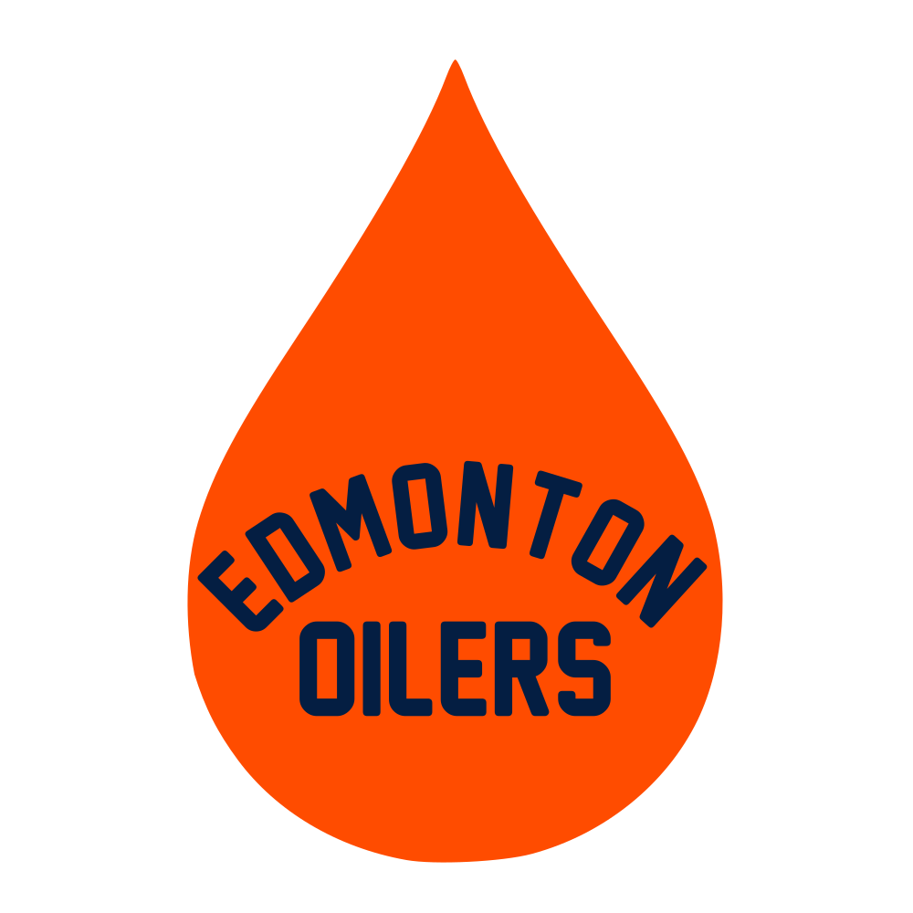
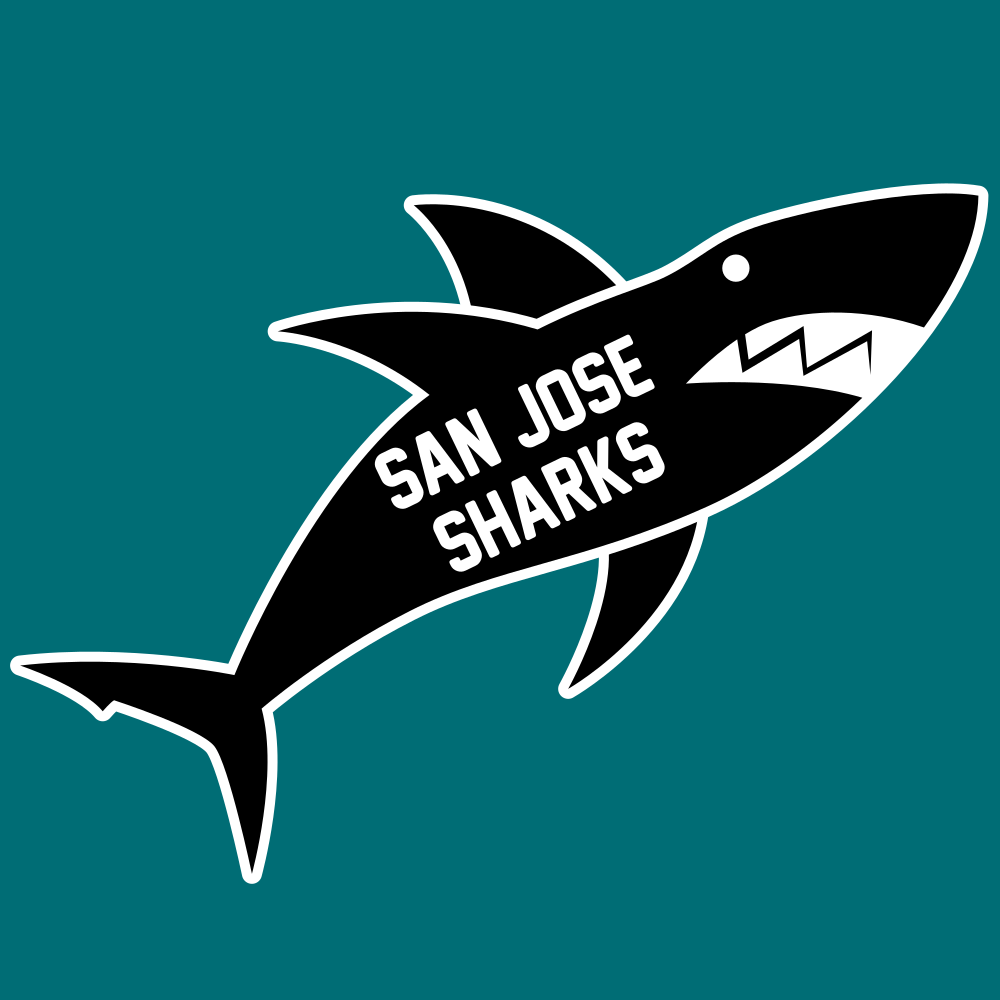

NHL Logos in the Style of the Maple Leafs
Similar to my previous post, where I created logos for the other Major League Baseball (MLB) teams in the style of the Blue Jays logo, I decided to create logos for the other National Hockey League (NHL) teams in the style of the logo of my favourite team, the Toronto Maple Leafs. My interpretation of this is as follows:
- The logo is in the form of the thing the team is named after, or in some cases the thing primarily featured in the team’s existing logo.
- The team name is written inside that form.
- The colouring of the logo is flat, with no shading.
- The colour of the logo is different on the home jersey than it is on the away jersey.
The last is, I think, a particularly interesting aspect of the Leafs logo (see home and away). It is worth noting that this isn’t specific to the Leafs (see Calgary home and away, as well as Tampa Bay home and away), but the Leafs did it first and it’s an interesting property.
For each logo, I’ve created home and away colourways, and in most cases I’ve created alternates as well, usually in throwback colours. These are simpler than the Blue Jays inspired ones, meaning that they were quicker to make and I have less to write about them.
Much credit goes to Chris Creamer’s SportsLogos.net, whose archive of old logos I referenced for just about every team and Team Color Codes, which provided most of the colour codes I needed. While it doesn’t exactly match the Leafs font, I used New Athletic M54, which gives a similar feeling and is generously made free for personal use.
Anaheim Ducks
I’m not a fan of the orange and gold, so I created an alternate in Mighty Ducks colours as well.
Arizona Coyotes
The first NHL game I ever went to was a Coyotes game against the Dallas Stars in Phoenix in 2001 or so, and I’ve been partial to their kachina jersey ever since. That jersey provides the colour scheme shown in the alternate, while the running coyote itself comes from more recently designed alternate jerseys.
Boston Bruins
I’ve never liked the smiling bear, but I think it worked well to combine his colour combination with a bear pose similar to the one used in the Bruins alternate logo.
Buffalo Sabres
I realized after creating these that the Sabres used a somewhat similar logo (scroll down) on their 2018 Winter Classic jerseys. The alternate colours here come from the so-called “goathead” logo of the late 1990s and early 2000s.
Calgary Flames
I’m not in love with the square bottom of the flame, but it seemed best suited to hold the team name.
Carolina Hurricanes
In most cases I’ve tried to use throwback colours from the same city as opposed to the same franchise, but I broke with that here in order to use Hartford Whalers colours. While Hartford wore green jerseys for most of their history, I flipped the green and the blue to create something that better resembles actual satellite photos of hurricanes.
Chicago Blackhawks
I knew from the start that I couldn’t do a direct interpretation of the Blackhawks logo because it wouldn’t translate well to this style, but also because I don’t want to get into the controversy surrounding the logo. Instead, I pared it down to one feather. The alternate colourway comes from this late 1920s/early 1930s Blackhawks jersey.
I wasn’t completely happy with the feather, so I tried out another interpretation as well: the Black Hawk helicopter.
Colorado Avalanche
The blue, red, and yellow alternate is based on the colours of the Colorado Rockies NHL team, which later moved to New Jersey, not to be confused with the current Colorado Rockies MLB team. The mountain being red is not ideal, but I decided it was important for the base of the jersey to be blue. The shape of the mountain is also loosely based on the Rockies logo.
Columbus Blue Jackets
I had a few options for the Blue Jackets logo: a bug like the fluorescent one used in the early days of the franchise, or a jacket, or a star (although that would conflict with the Dallas Stars), or a Union soldier’s hat like in this logo, or a cannon as is used in a more recent alternate logo. Ultimately, though, I went with a simplified Ohio flag, as is used in their primary logo. I simplified it to only include the unique shape of the flag and the buckeye.
The alternate colours come from this alternate logo.
Dallas Stars
It’s an unpopular opinion, I know, but I like the so-called “Mooterus” logo. Still, the Stars logo had to be a star. I added a bit of shading at the points to evoke the three-dimensional look of the current logo.
Detroit Red Wings
Of course a literal interpretation of the name of the team would mean only including the wings, but the Red Wings logo is too good to change. They’ve always used the same colours, so there’s no alternate here.
Edmonton Oilers
This is just the oil drop from the Oilers logo; it’s simple, but effective, I think. The alternate colours are based on their mid 2000s alternate logo.

Florida Panthers
Rather than the old pouncing panther or the new panther head, I went with a full body profile of the panther. The lines of the facial features are a bit too fine; I may go back later and fix them.
Los Angeles Kings
I don’t like the current “homeplate” logo, so I based this on just the crown. The alternate colours are those used from the team’s inception until the late 1980s.
Minnesota Wild
There are varying opinions on what the Wild logo is supposed to be, whether a bear or a wolverine or something else. I side-stepped that by using the outline of the state of Minnesota as the logo here, augmented with some evergreen trees, just like the real logo, and the Big Dipper and North Star, since Minnesota is the North Star State. This is also a nod to the Minnesota North Stars, who later moved to Dallas, and whose colours are used in the alternate here.
Montreal Canadiens
In a vacuum, the most logical symbol for a team named the Canadiens would be a maple leaf. On top of that, the Habs actually wore maple leaves on their jerseys for a couple seasons back in the 1910s. So, while this is bound to make some people angry, I present maple leaf-shaped Canadiens logos. The home and road use the current colours, while the alternate takes its colours from the first of the two Habs logos linked above.
Nashville Predators
Originally I was going to make this just the head of a sabre-toothed tiger, but when my brother saw the sketch he was not impressed, so I took another shot at drawing the cat’s full body. The Predators created a new logo for the 2020 Winter Classic and I knew I wanted to use that for as the head of my rendition. Even with that, I was stuck on how to represent the body, until I saw this tweet linked from Uni Watch. It shows a full body version of the Winter Classic logo, which they used on their helmets for the game. I haven’t found a better view of the logo, but it gave me a place to start. I bulked him up a little and of course included the full team name instead of just “Nashville”.
New Jersey Devils
For the logo here, I simply went with the devil horns from the Devils logo. The red and green throw back to the original Devils colours.
New York Islanders
The Islanders are simply named after Long Island, so that’s what I used here. I hadn’t noticed it before, but it seems the actual Islanders logo doesn’t show Brooklyn and Queens, even though they form the western-most part of Long Island. Since the Islanders are playing some of their home games at the Barclays Center in Brooklyn, I thought it was fitting to add those back in my version. The brighter alternate colours come from the “fish sticks” logo.
New York Rangers
The Rangers have used the Statue of Liberty in a logo before, but they’re best identified by their shield. The shape is slightly exaggerated here. The red writing on blue is hard to read, but I didn’t have a better way to get both colours into the road jersey.
Ottawa Senators
This one is based on the centurion helmet from this Sens alternate logo, which I believe is the best of the centurion logos they’ve used.

Philadelphia Flyers
The outline of the regular Flyers logo doesn’t provide a lot of space to include the team name, so I went with something more similar to the Philadelphia/Adirondack/Lehigh Valley Phantoms logo. I’ll also say that I think it would be cool to see an orange version of the winged ‘P’ on a black or white jersey.
Pittsburgh Penguins
This logo had to be a penguin, of course, but I’m not sure I found the best pose for him. The placement of words is awkward, but at least the bird is identifiable.

San Jose Sharks
I could have tried to include orange somewhere here, but I’m not really sure why they added it in the first place. The original sharks jersey is my favourite uniform ever.

St. Louis Blues
The classic blue note is here, with the alternate adding in the red the team used to use.
Tampa Bay Lightning
To get enough open space to write the team name in, I had to add a cloud to the usual lightning bolt.
Vancouver Canucks
While not a literal interpretation of “canuck”, Vancouver has been using an orca in their logo since 1997, so it made sense to include it here. The home and road jerseys use their current and original blue/green, while the alternates use the late 1990s to mid 2000s maroon/navy and the late 1970s to mid 1990s red/yellow/black.
Vegas Golden Knights
Vegas has little hockey history to draw on, so there’s no alternate here.
Washington Capitals
An eagle would have been the abstract choice here, but I went with the Capitol dome itself, evoking the old Capitals logo and this recently reintroduced Washington Nationals logo. The alternate colours are from the blue gold era in the middle of Capitals history.

Winnipeg Jets
The fighter jet I used is a slightly modified version of the one in the modern Jets logo. I present it in current Jets colours, the colours of the current Jets alternate jerseys, and the colours of the original Jets jerseys, from before they moved to Phoenix.